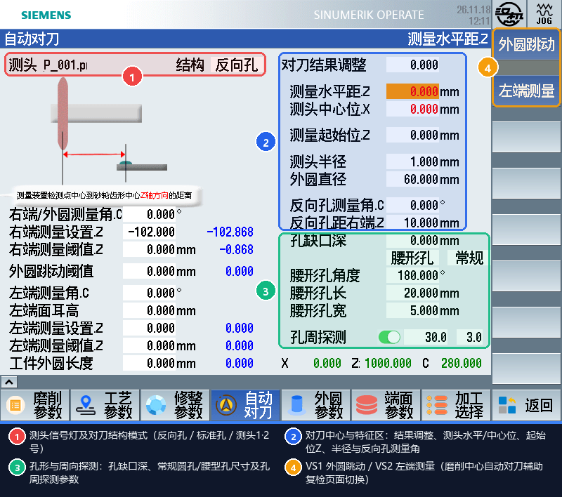
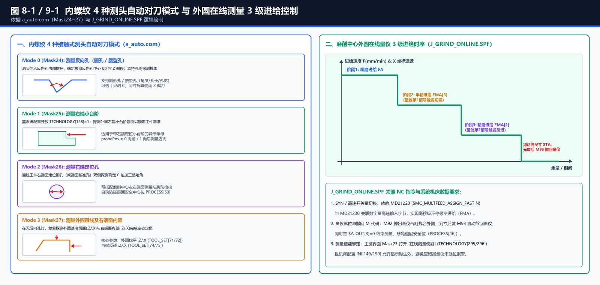
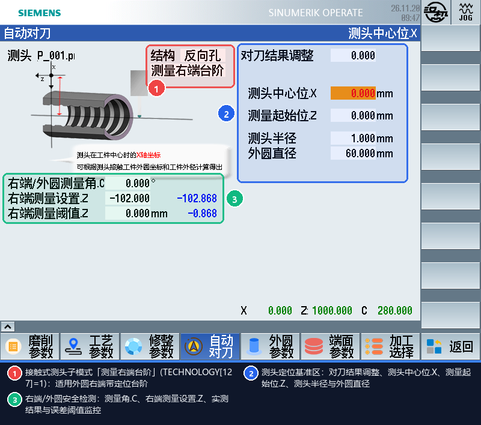
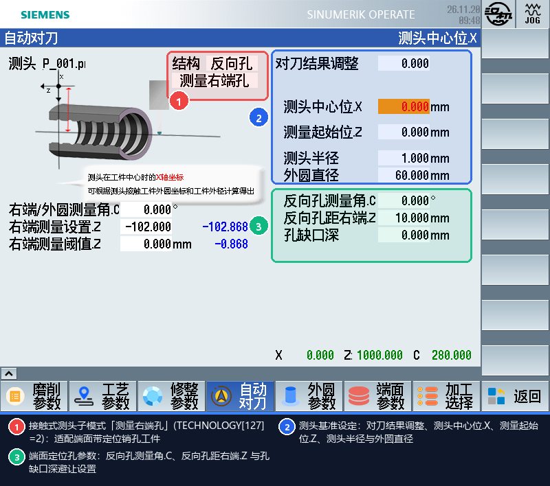
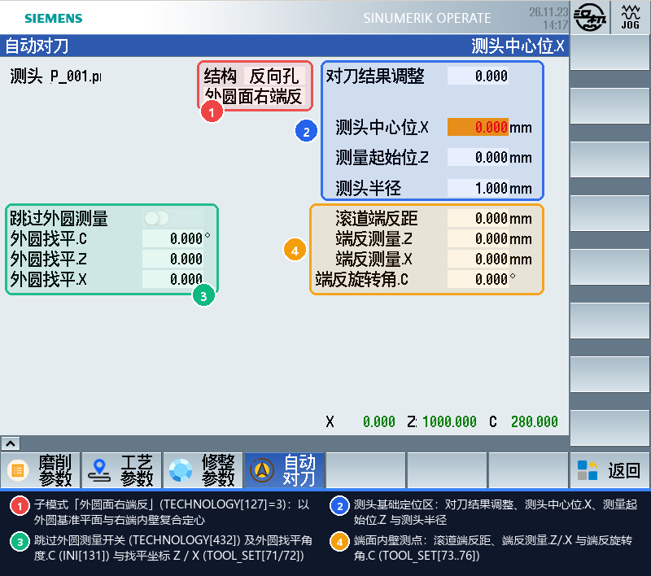
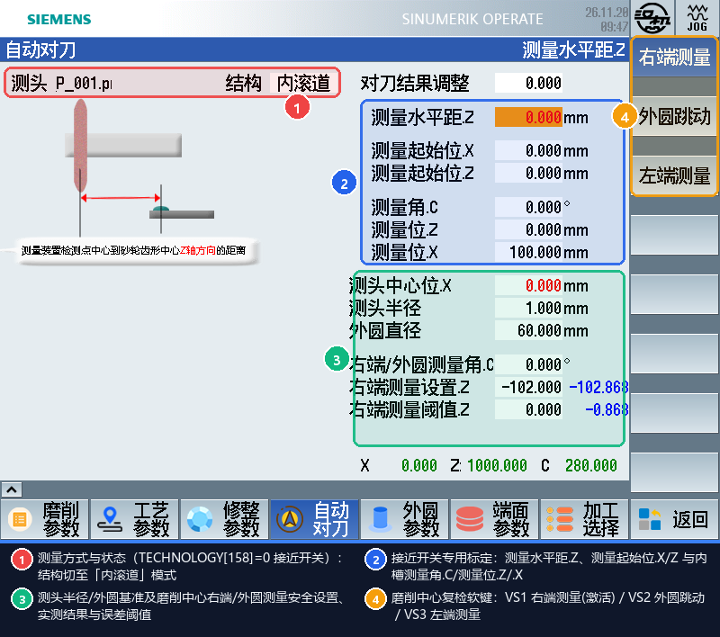

8.2 内螺纹与磨削中心自动对刀标定
内螺纹（含磨削中心）自动对刀画面对应 a_auto.com 中的 Mask21（路由总控）→ Mask23～Mask27，依据底层配置的传感器类型与测量模式自动适配显示内容。

1. 两种内螺纹传感器与四类测头模式路由（Mask21）
在 系统配置 → 对刀配置 中可通过 内螺纹测量方式（NC：TECHNOLOGY[158] / HMI：TECHNOLOGY[159]） 选择：
0接近开关测量内滚道（Mask23）1接触式测头：由a_auto.comMask21根据左上角测量模式（NC：TECHNOLOGY[127]/ HMI：TECHNOLOGY[128]） 精确加载下列 4 个独立子画面：0测量反向孔（Mask24）：适用内部带圆孔或腰型换向器孔的滚珠丝杠螺母（默认主力模式）；1测量右端小台阶（Mask25）（需TECHNOLOGY[128]=1/ HMI：TECHNOLOGY[129]开放）：适用外圆右端有基准小台阶定位的异形工件；2测量右端定位孔（Mask26）：通过端面定位销孔确定 C 轴角度；3测量外圆直线及右端面内壁（Mask27）：在无反向孔时通过外圆基准切面与端面内壁复合定心（支持外圆找平 .Z/.XTOOL_SET[71/72]与端反碰 .Z/.XTOOL_SET[74/75]）。
2. 公共传感器与反向孔几何参数详解
| 参数名称 | NC 变量 | 标定方法与现场设置说明 |
|---|---|---|
| 对刀结果调整 | TOOL_SET[41] |
试磨后发现整体偏刀时的微调量（不影响标定基准），单位随测量方式区分： • 内滚道 / 反向孔常规模式 / 外圆面右端反：单位为 mm（折算偏移量）；• 只测 C / 测量右端小台阶 / 测量右端定位孔：直接叠加到加工起始角 TOOL_SET[4]，单位为 度（°） |
| 测头/开关水平距 | TOOL_SET[10] |
极其关键的基准参数（见上图左图红箭头）： ① 开动机床使测头/开关接触工件右侧端面，记 Z 坐标 Z1；② 移开测头，让砂轮齿顶对准同一右端面，记 Z 坐标 Z2；③ 已知测头球头半径 ，填入 |
| 测头中心位 | PROCESS[53] |
测头球心正好位于工件回转中心线时的 X 轴坐标（接触外圆测 X 坐标再加工件外半径算出） |
| Z 轴测量起点 | INI[48] |
测头伸出并保证工件在安全孔外约 50 mm 处的 Z 轴起点 |
| 测头半径 / 工件大径 | TOOL_SET[9] / INI[34] |
按测头图纸和工件实际大径填写（影响防碰绕行路径与进孔间隙） |
| 反向孔测量角 / 距右端 | INI[49] / INI[35] |
预先找准让测头伸入后大致位于反向孔中央的 C 轴角度与端面到孔心距离；孔缺口深（PROCESS[54]）用于侧边有开口时自动避让缺口边缘 |
| 反向孔类型 | TOOL_SET[22] |
0 圆形孔 / 1 腰型孔（选腰型孔时填 腰型孔角度 INI[31]、孔长 INI[32]、孔宽 INI[33]；通常右旋大于 90°，左旋小于 90°） |
| 孔周探测功能 | TECHNOLOGY[155..157] |
工件来料无粗定位夹具时，开启 孔周探测 = 是 并设 探测范围（如 30°）与 探测步距（如 5°），当首次直进无法入孔时头架自动步进摆角搜寻孔位 |
| 测量模式（只测 C） | INI[162] |
0 常规：测上下（C）+ 左右（Z）定位孔中心；1 只测 C：仅测上下定圆周角，同时将端面定位偏差折算到磨削 偏刀调整 |

2.1 扩展接触式测头子模式标定要点（Mask25 / Mask26 / Mask27）
除默认模式 0（反向孔，Mask24）外，当选用其他三种接触式测头子模式时，需按下列各 Mask 专属字段补充标定：
| 测量模式 / 子画面 | 适用工件场景 | 核心专有参数（NC 0-based）与标定逻辑 |
|---|---|---|
模式 1：测量右端小台阶（Mask25）需配置 TECHNOLOGY[128]=1 |
工件外圆右端加工有同心定位小台阶（无反向孔或不便伸孔） | 使用 测头中心位.X（PROCESS[53]）、测量起始位.Z（INI[48]）、测头半径（TOOL_SET[9]）、外圆直径（INI[34]） 与 右端测量设置/角度/阈值（INI[136] / INI[131] / INI[137]），通过右端面与基准小台阶协同锁定轴向 Z 及起始角 |
模式 2：测量右端定位孔（Mask26） |
端面带有专用的角度定位销孔（常见于法兰/套筒类滚珠螺母） | 除右侧基准及测头位置参数外，填好 反向孔测量角.C（INI[49]）、反向孔距右端.Z（INI[35]） 及 孔缺口深（PROCESS[54]）；自动伸入端面定位孔探测孔壁对称点以确立 C 轴基准相位 |
模式 3：测量外圆直线及右端面内壁（Mask27） |
外圆侧面加工有平面基准线、且可借助右端内壁共同定心 | 需填写两套关联测点： ① 外圆基准直面： 外圆找平.C（INI[131]）、外圆找平.Z（TOOL_SET[71]）、外圆找平.X（TOOL_SET[72]）；② 端面内壁特征： 端反旋转角.C（TOOL_SET[76]，垂直面到端反测点的 C 轴旋转角差）、端反测量.Z（TOOL_SET[74]）、端反测量.X（TOOL_SET[75]）与 滚道端反距（TOOL_SET[73]，滚道基准到端反内壁距离）；③ 跳过外圆测量（TECHNOLOGY[432]，0 关 / 1 开）：开启后不测外圆找平面，外圆找平三项隐藏，头架从 外圆找平.C 直接再转 端反旋转角.C 测端反，起始角以 0° 为基准，适用于无找平面或夹具定角的工件 |



3. 接近开关测内滚道特有参数（TECHNOLOGY[158] = 0）
当选用接近开关扫描内部螺旋滚道时，在右侧额外设定：
测量起始位 .X（TECHNOLOGY[176]）：开关安全深入内孔过程中的 X 轴径向起始坐标；Z 轴测量位（INI[52]）：手动把开关大致对正第一个内螺纹槽内的 Z 坐标；测量位 .X（INI[51]）：感应到信号后再向槽壁靠近约0.2 mm处的精确扫描径向坐标。

4. 磨削中心专属：跳动、外圆长与左右端面安全检测
在 磨削中心（;ifIsCenter） 界面中，画面左侧展示复检设定与实测结果，右侧垂直软键栏用于选择本次自动对刀要包含的复检项目（点亮即包含；随当前对刀画面动态分布：Mask23 接近开关测量含 VS1 右端测量 / VS2 外圆跳动 / VS3 左端测量，Mask24 接触式测头反向孔含 VS1 外圆跳动 / VS2 左端测量）：
- 右端测量：
- 输入手动对好标准件右端面时的
右端测量设置（INI[136]）、右端测量角度（INI[131]） 及右端测量阈值（INI[137]，如0.05 mm）； - 执行条件：
Mask23内滚道方式下可单独开关（但打开外圆跳动或左端测量时会自动联动点亮，关闭右端测量时另两项同步关闭）；接触式测头方式下除外圆面右端反（Mask27）外均执行右端测量； - 单向阈值检验：仅校验
实测结果（INI[50]）与设定值的正向差值INI[139] = 实测 - 设置 > 阈值，超限时立即触发 12 号报警（工件右端过长） 停机（反方向偏差不报警）；
- 输入手动对好标准件右端面时的
- 外圆跳动测量（
INI[138]+INI[127]）：- 仅在内滚道（
Mask23）和测量反向孔（Mask24）模式下执行（右端台阶、右端孔、外圆面右端反不执行）；开启后沿外圆按 3 点探测圆跳动（INI[133]），超过外圆跳动阈值（INI[127]，如0.08 mm）立刻触发 11 号报警（外圆跳动/圆度过大） 防偏心撞刀；
- 仅在内滚道（
- 左端测量与工件长度测量（
TOOL_SET[44..48]&INI[30]/INI[140]）：- 同样仅在内滚道（
Mask23）和测量反向孔（Mask24）模式下执行；开启TOOL_SET[44]=1后，测头移到外圆外侧、比耳高低约 1.5 个测头直径处并转至左端测量角（TOOL_SET[58]）避开卡爪，从右端面起沿 Z 向最多探测工件外圆长度 + 5 mm（INI[30] + 5）寻找左端面——若INI[30]过短或耳高过大导致碰不到端面，会触发 8 号报警（工件长度设置有误!）； - 端面偏差仅单向校验
实测 - 设置 > 左端测量阈值（TOOL_SET[48] > TOOL_SET[47]），超限触发 13 号报警（工件左端过长）；测量成功后自动将实测工件外圆长度测量（INI[140]） 写回INI[30]（以上报警代码详见 10.1 节）；
- 同样仅在内滚道（
- 整体测量顺序：内滚道方式先测螺纹槽，再依次测右端面、外圆跳动、左端面；测头方式依次测右端面、外圆跳动、反向孔，最后测左端面。测量完成后对应工序的当前磨削接触位复位到初始值。
重要提醒：在磨削中心中，自动对刀完成后系统紧接着就会按 加工选择看板 点亮的绿色工序切入磨削；但外圆和端面的起刀深度 仍以各自界面的
初始磨削接触为准，自动对刀仅负责核查毛坯装夹位置是否超差及求解内螺纹 C 轴起始角！